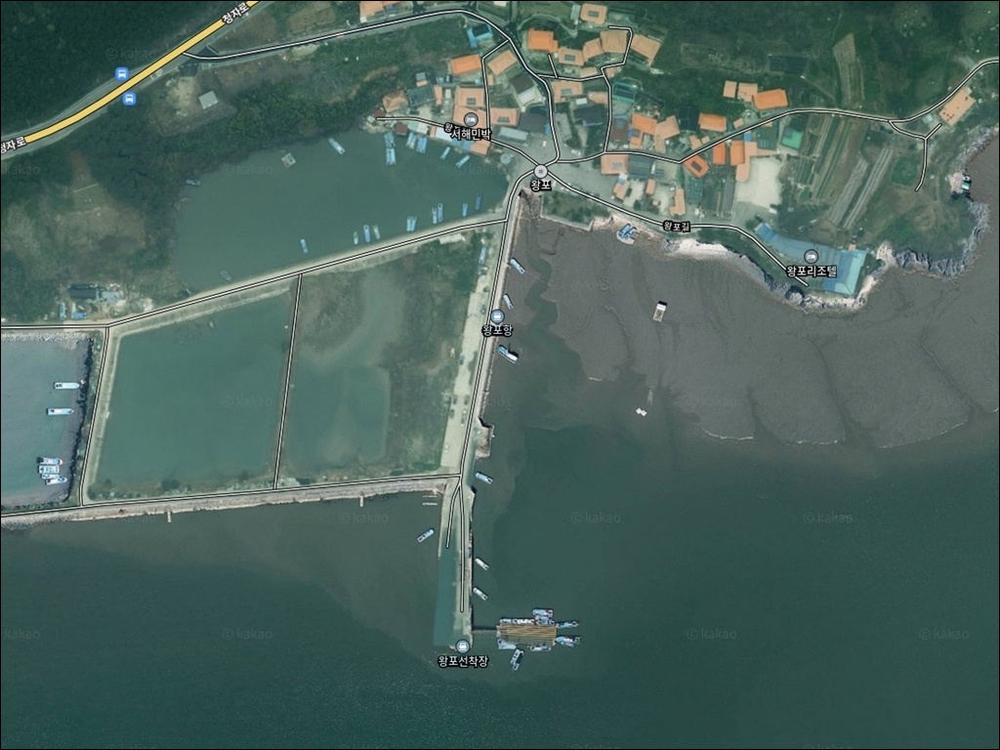
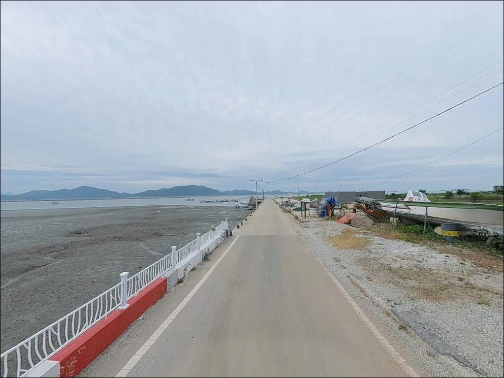
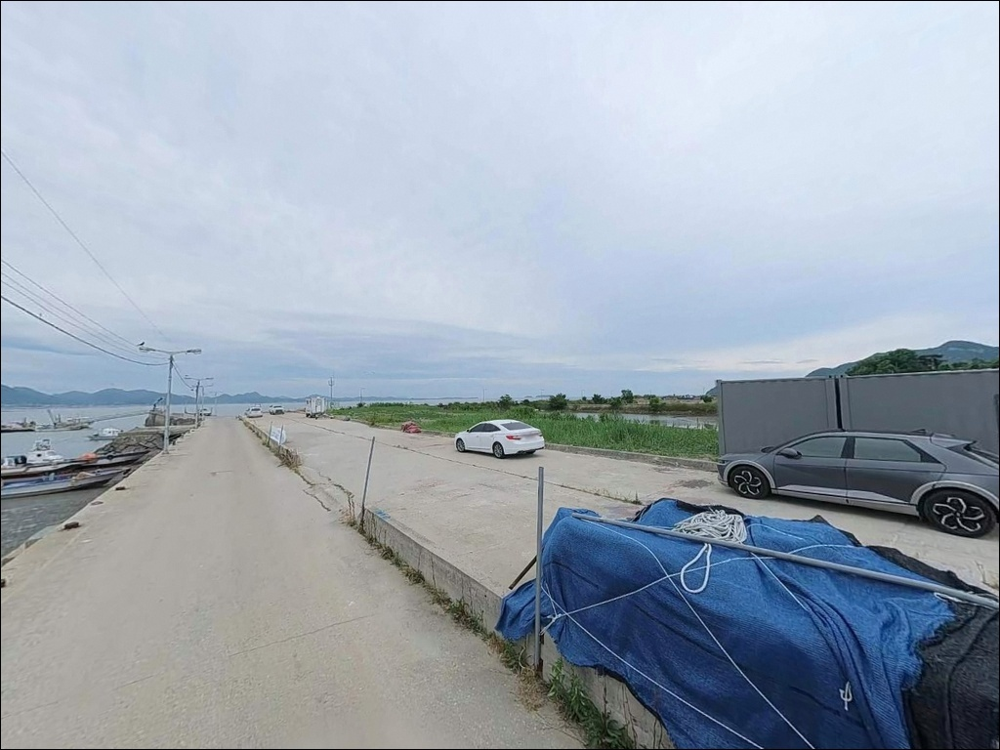
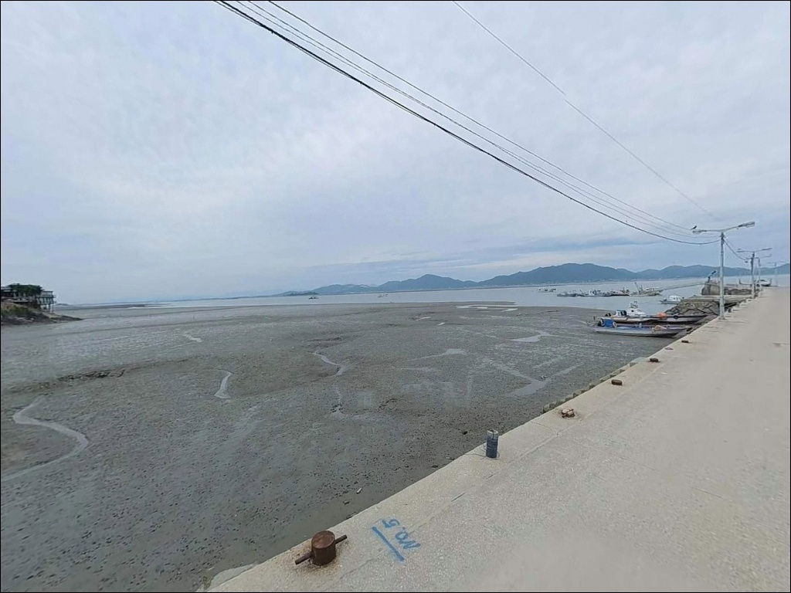
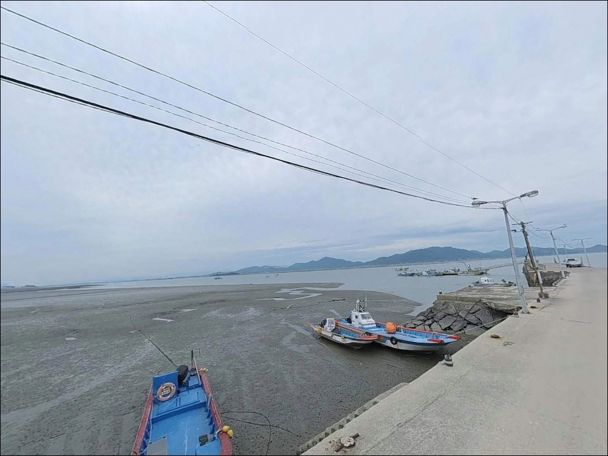
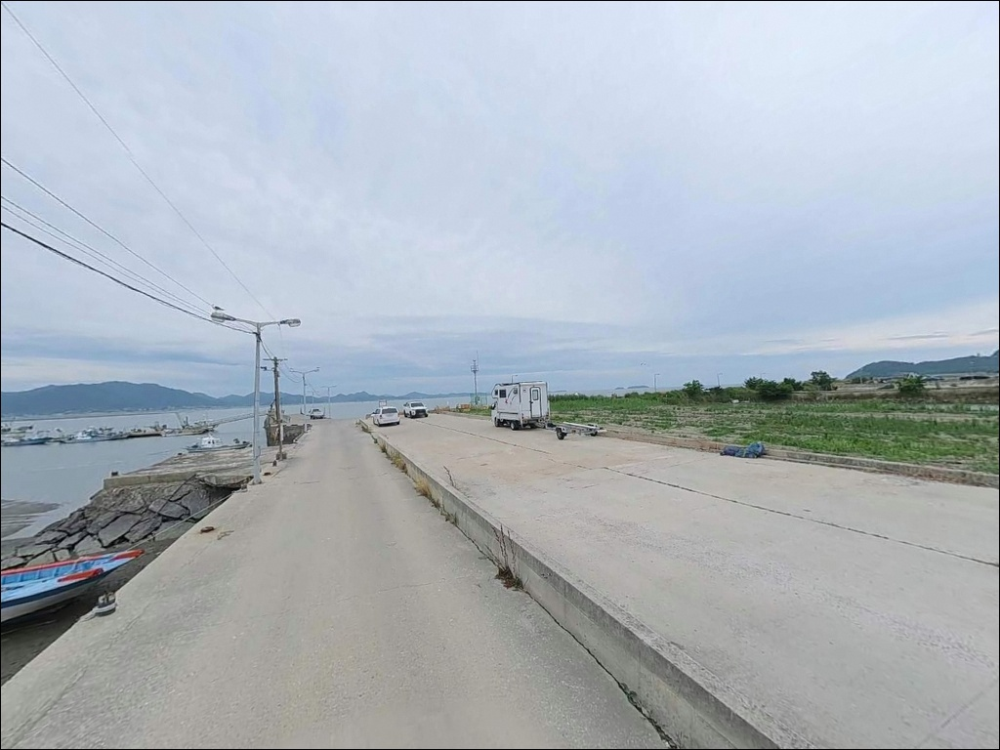
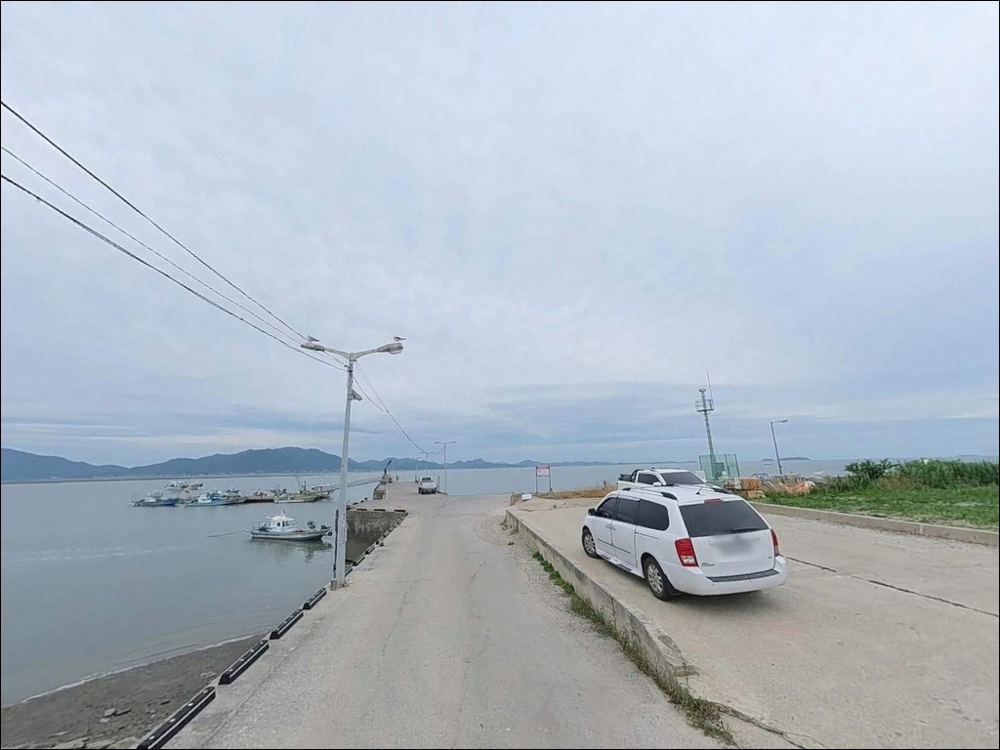
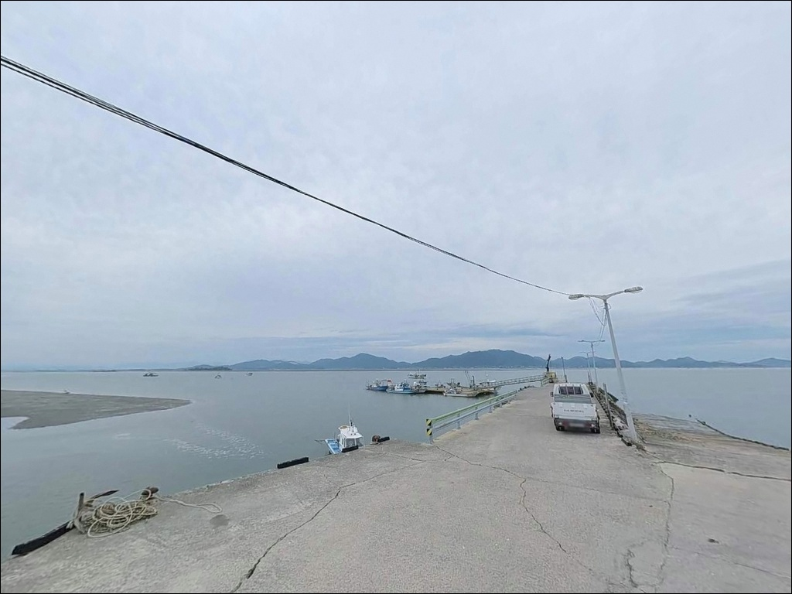
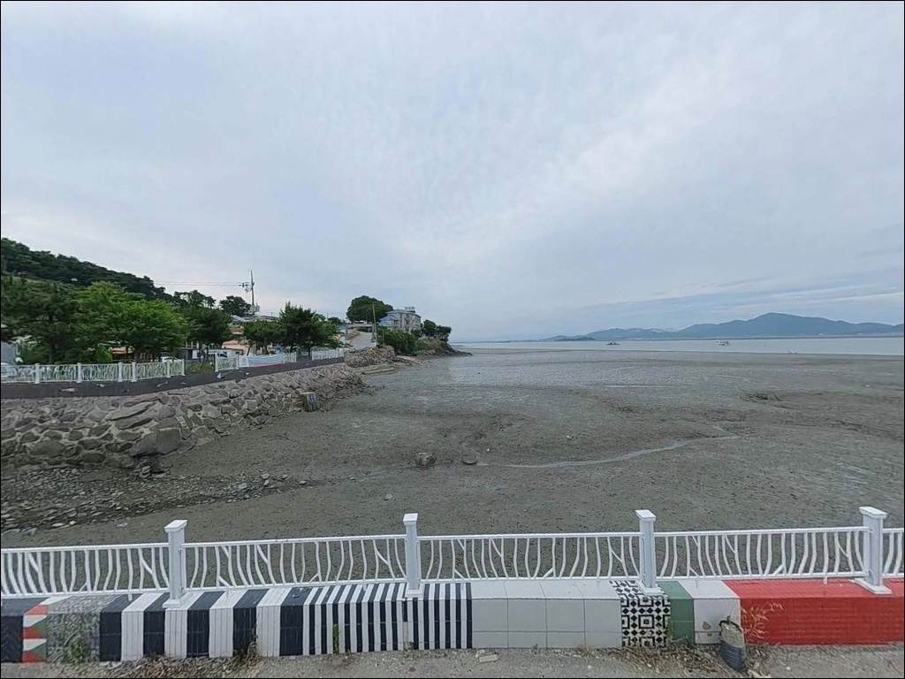

왕포항, 왕포선착장, 전북 부안군 고요함이 매력인 차박, 낚시 감성 장소
이 페이지에는 광고(제휴 링크 포함)가 있으며, 광고 링크를 통해 구매하면 운영자가 판매 수익 또는 수수료를 받을 수 있습니다. 포인트 사진: 카카오맵 스카이뷰·로드뷰. 이 페이지의 지도·사진 이미지는 카카오맵의 실제 서비스 이미지와 다를 수 있습니다.


포인트 안내
왕포항
전북 부안군 진서면 운호리 200-20
서해 소형 어항에서 가장 자주 하는 실수는
물때 확인 없이 출발하는 것입니다.
왕포항 일대의 대조승은 6.72m에 달해,
간조 전후에는 수심이 급격히 낮아지고
어떤 채비를 던져도
낚시 자리로서의 기능을 잃는 구간이 생깁니다.
전북 부안군 진서면 운호리,
변산반도 국립공원을 끼고 있는
소규모 어촌 마을 앞에 자리한 왕포항은
칠산어장 인접 해역의 어촌정주어항입니다.
원투낚시와 야간 갈치 포인트로
부안권 낚시꾼들 사이에서 조용히 알려진 곳입니다.
이 글은 왕포항의 진입 동선,
차박 체류 여건, 물때 판단 기준,
낚시 스타일별 공략 조건에 집중합니다.
조황 단정이나 특정 어종 보장은
이 글의 범위에 포함되지 않습니다.

1. 진입 동선과 포인트 접근성
왕포항은 부안군 진서면 운호리 마을 안쪽으로
들어가는 형태의 어촌 포구입니다.
외곽 도로는 일반적인 농어촌 2차선 수준이지만,
마을 안쪽으로 진입할수록
도로 폭이 좁아지는 구간이 나타납니다.
대형 SUV나 루프탑 장비를 갖춘 차량이라면
출발 전 위성지도로 진입로를 미리 확인하는 것이
기본입니다.
회차 공간은 선착장 입구 주변 공터가
가장 현실적인 후보입니다.
소형 어촌 항 구조상 넉넉한 광장형 주차 공간은
기대하기 어려운 편이며,
어선 이동 동선을 막지 않는 가장자리 자리를
선택하는 것이 기본 매너입니다.
이른 아침 어업 활동이 이루어지는 마을 포구이므로,
야간 주차 시에는 어선 출입로 확보를 먼저 확인하고
자리를 잡아야 합니다.
소형~중형 차량 기준으로
진입과 회차에 무리 없는 구조입니다.

2. 차박 환경과 야간 체류 여건
왕포마을은 50여 가구 규모의 소박한 어촌입니다.
야간에는 차량 통행이 거의 없고
민가 밀집도가 낮은 편이라,
조용한 분위기에서 하룻밤 머무는 것 자체는
가능한 구조입니다.
다만 가로등이 충분하지 않을 수 있어
개인 조명 장비는 반드시 준비해야 합니다.
이 일대는 변산반도 국립공원 인근에 해당합니다.
국립공원 인접 구역에서의 야영·취사는
지정 장소 외에서 원칙적으로 제한되는 경우가 있어,
방문 전 국립공원관리공단 또는 부안군
관할 기관에 먼저 확인하는 것이
체류 방식 결정의 첫 번째 기준입니다.
서해 방향으로 열린 구조의 소형 항이라
바람 방향에 따라 체감 조건이 달라집니다.
낚시를 마치고 잠시 대기하거나 새벽낚시를 이어가는
'낚시 대기형 차박'이 이 포인트에 맞는 그림입니다.
장기 캠핑보다는 짧은 1박 체류 중심으로
계획하는 편이 현실적입니다.


3. 주변 편의시설 및 인프라 현황
왕포항 반경 3km 이내에는
편의점·마트·주유소 등 즉시 이용 가능한
확정된 편의시설 정보가 없습니다.
진서면 소재지인 곰소 방향으로 이동해야
편의점과 주유소를 이용할 수 있는 구조로,
완전 자급 체제로 진입하는 것이
현실적인 준비 방식입니다.
식수, 얼음, 낚시 소품, 연료 모두
출발 전에 갖춰야 합니다.
곰소항 방향에는 낚시점과 식당이
함께 있는 편이라,
부족한 소품이 있다면
이 방향으로 먼저 들러 보완하는 동선이
효율적입니다.

4. 방문 전 반드시 확인해야 할 사항
왕포항 방문 준비에서
가장 먼저 해야 할 것은 물때 확인입니다.
이 일대의 조수간만 차는 대조 기준 6.72m에 달합니다.
간조 전후에는 수심이 급격히 낮아지고
발판이 잠기는 속도도 빠른 편이라,
바다타임에서 출발 당일 물때를 먼저 확인하고
만조 전후 2~3시간을 노려 입장 시각을 잡는 것이
기본 전략입니다.
서해 특성상 기상 변화가 빠른 편입니다.
강풍·풍랑 예보가 있는 날은
소형 어항의 방파제 끝단 접근이 위험할 수 있어,
기상청 예보를 출발 당일 아침 다시 한번 확인하는 것이
포인트 낭비를 막는 조건입니다.
소형 항 구조상 채비가 바닥에 걸리는 경우가 있으므로
여분 채비는 넉넉하게 준비하는 편이 좋습니다.
야간 낚시 시에는 헤드랜턴과 구명조끼를
반드시 챙겨야 합니다.

5. 지형 기반 낚시 여건 분석
왕포항은 방파제 55m, 선착장 188m 규모의
소형 어촌정주어항입니다.
대형 방파제가 길게 뻗은 구조가 아닌,
선착장 중심의 단순한 포구 형태로,
낚시 자리는 방파제 끝단과 선착장 가장자리에
집중됩니다.
칠산어장 인접 해역에 위치해 있어
조류의 영향권 안에 있는 곳입니다.
내만형 포구 구조로 외해 파도의 직접 영향은
비교적 제한적인 편이지만,
서해 특성상 만조·간조 전환 시
조류 흐름이 달라지므로
입장 전 조류 방향 파악이 자리 선택의 기준이 됩니다.
왕포수로 입구 방향은 민물과 바닷물이 만나는
기수역 특성을 보이는 구간입니다.
기수역이란 민물과 바닷물이 섞이는 경계 구간으로,
먹이가 집중되는 구조 덕분에
다양한 어종이 모이는 지형입니다.
이 구간 주변은 루어 탐색 대상으로
살펴볼 만합니다.
방파제 끝단과 선착장 모서리는
내항 대비 수심 변화가 빠른 구간입니다.
이 일대 해역에서 기대해볼 수 있는 어종으로는
주꾸미, 전어, 갈치, 붕장어, 우럭 등이 있으며,
계절에 따라 어종 패턴이 달라집니다.
출조 전에 왕포항·부안 진서면 방면 최신 조황을
반드시 검색해 보시기 바랍니다.


6. 낚시 자리에 따라 달라지는 스타일 선택
이 포인트에서 가장 어울리는 방식은
원투낚시입니다.
선착장 끝단과 방파제 외항 방향은
내항보다 수심 변화가 빠르고 조류의 영향을 받아
바닥층 어종을 노리는 원투 채비에
유리한 조건을 갖추고 있습니다.
봉돌을 멀리 캐스팅한 뒤
바닥을 탐색하는 방식이 이 지형에 맞습니다.
원투낚시란 무게 있는 봉돌을 달아
멀리 캐스팅하는 방식으로,
방파제나 선착장 끝단에서
바닥층 어종을 노리는 데 적합한 낚시 스타일입니다.
야간 갈치낚시도 이 포인트의 주요 스타일입니다.
변산권 갈치 포인트로 부안 낚시꾼들에게
알려진 곳으로, 여름 후반에서 가을 사이
야간 원투 또는 루어 채비로 공략합니다.
방파제 가장자리에서 조류 방향을 등지고
캐스팅하는 자리가 갈치 입질이 살아나는
위치입니다.
찌낚시는 내항 선착장 석축 주변이 맞는 자리입니다.
구조물 주변에 형성된 전어·숭어 회유 구간을
노리는 방식으로, 낮 시간대에도
조용히 앉아 기다릴 수 있는 스타일입니다.
주꾸미 워킹 에깅도 시즌에 따라
선착장 주변 바닥 탐색 방식으로 시도해볼 수 있습니다.
서해 소형 어항에서 낚시 자리를 제대로 쓰려면,
물때 계산이 진입 시각보다 먼저입니다.

7. 대안 포인트와 플랜 B 동선
왕포항 조황이 기대 이하이거나
주차 여건이 여의치 않을 때,
가장 먼저 이동할 곳은
마동방조제입니다.
같은 진서면 운호리 생활권 안에 있으며,
긴 방조제를 따라 원투낚시와 갈치 원투 자리가
여럿 형성되어 있는 포인트입니다.
차량으로 10분 거리의 곰소항은
변산·부안권 대표 방파제 포인트입니다.
낚시 인프라가 풍부하고
식당과 낚시점도 인근에 있어,
왕포항 방문 전 소품을 보완하거나
조황 흐름이 좋지 않을 때 이동 거점으로
활용하기 좋습니다.
격포항 북방파제는 부안권 최대 규모의
방파제 낚시 포인트입니다.
북방파제 610m 규모로 외항과 내항 모두에서
공략이 가능하며, 횟집과 숙박업소가 함께 있어
왕포항과 묶어 이동하기 좋은 대안입니다.
마동방조제는 왕포항에서 같은 생활권 안에 있는
대안 포인트로, 조황이 기대 이하일 때
바로 이동할 수 있는 거리입니다.

조용한 포구에서 제대로 즐기려면
물때부터 계산하고 출발하십시오
야간 갈치 원투나 서해 원투낚시를 즐기는 낚시꾼이라면
왕포항의 구조는 나쁘지 않은 선택지입니다.
칠산어장 인접 해역, 기수역이 형성된 수로 입구,
조류 영향을 받는 방파제 끝단은
서해 소형 어항 특유의 낚시 여건을 갖추고 있습니다.
반면 물때 계산 없이 간조에 맞춰 도착하거나,
인프라를 기대하고 들어가면
낭패를 보기 쉬운 곳이기도 합니다.
물때 확인, 자급 준비, 국립공원 야영 여부 사전 확인,
이 세 가지를 갖추고 간다면
변산반도 조용한 포구에서의 차박 낚시로
기억에 남을 수 있는 포인트입니다.
소음 없는 어촌 마을에 차를 세우고
서해 조류 흐름 앞에 채비를 던지는 밤이라면,
왕포항은 그 분위기를 충분히 줄 수 있는 곳입니다.